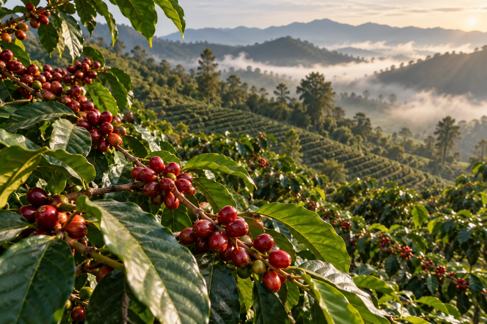

01 / THE FARMING ZONECONCEPT IMAGERYGROW WITH THE LAND
Where it all begins.
Explore 4.4 acres with approximately 3,000 Arabica trees, intercropped with tea, macadamia, papaya, dragon fruit and passion fruit.
4.4 ACRES OF COFFEE3,000 ARABICA TREES
A MOMENT TO ENJOY ↗
01Walk among the coffee trees
02Discover our companion crops
03See the harvest up close